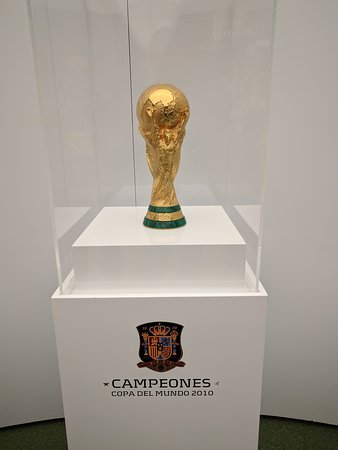
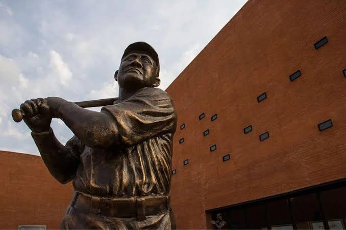
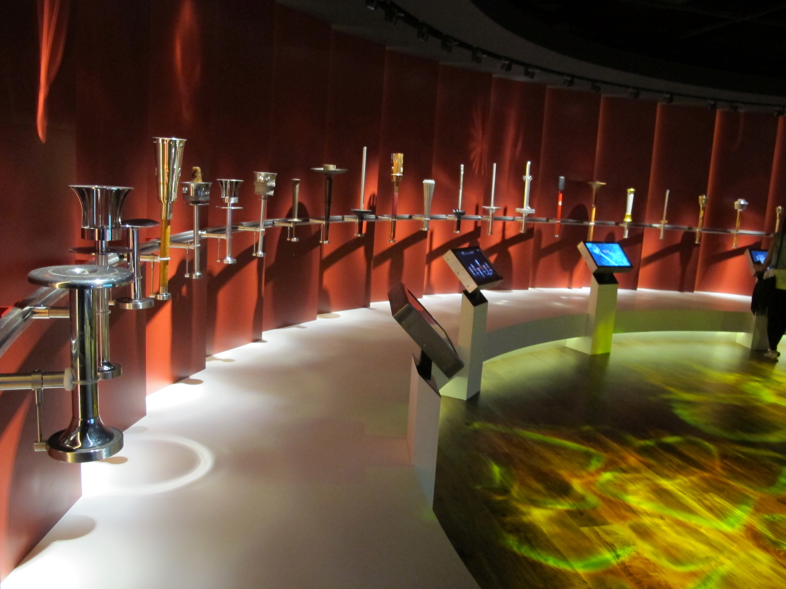

Fútbol: la pasión del mundo
Tema: Historia del fútbol y los mundiales
Recorrido por balones, jerseys y recuerdos de los mundiales, incluido México 1986.
Ver galeríaActualmente el museo cuenta con tres exposiciones permanentes.

Tema: Historia del fútbol y los mundiales
Recorrido por balones, jerseys y recuerdos de los mundiales, incluido México 1986.
Ver galería
Tema: Grandes momentos del béisbol
Guantes, bates y pelotas firmadas por jugadores legendarios de las Grandes Ligas y la Liga Mexicana.
Ver galería
Tema: El espíritu olímpico
Medallas, antorchas y la historia de los Juegos desde la antigua Grecia hasta hoy.
Ver galería